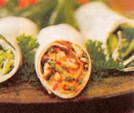
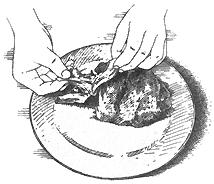
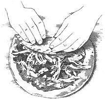
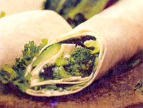

There's good stuff inside, but it isn't a tie.
Photography by David Johnson
With all due respect to the festive holiday paper we use to adorn gifts, I'd like to talk about a different kind of wrap. • Though the winter season can be filled with laughter and cheer, it's easy to get bogged down by the holiday frenzy and succumb to consuming foods that sacrifice nutrition for expedition. Enter the tortilla-based wrap.
A staple of the Mayan diet and cornerstone of Mexican cuisine, tortillas are traditionally made from masa flour. Present at almost every meal, tortillas serve many functions, including food, spoon and plate. In the United States, tortillas comprise the fastest-growing segment of the baking industry, and have made their way into sandwiches, soups and desserts.
Flour tortillas come in sizes ranging from 8" to 12". They also come in a variety of flavors and colors: green spinach, orange-colored chile, sun-dried tomato, whole wheat or plain white tortillas. In fact, most flat breads, such as chapattis or lavosh (or lavash) - even a split pita - can be used as a wrapper.
To warm your tortilla, wrap it in foil and place it in a 350° F oven for about 10 minutes. You can also warm it in a large skillet over medium-high heat for about 15 seconds per side; if you want your tortilla a bit crispy, brush the skillet with olive oil before adding the tortilla. Next, spread the ingredients in a thin layer, leaving about a half-inch of space around the edges of the tortilla. Now you're ready to wrap. Roll it up so the inside will create a spiral design when sliced in half diagonally. The trick to wrapping is tension: Too tight and the contents will spill out the ends, too loose and it will fall apart when you try to eat it.
You can prepare the filling ahead of time, but don't wrap it in advance because the tortilla will get soggy. If you're brown-bagging a wrap to work, put the ingredients in sealable con tainers and assemble at lunchtime.
For a portable wrapper, cut your tortilla in half, roll it in aluminum foil, and place it in a plastic bag with napkins.
Elegant and delectable, these are embarrassingly easy. Since I only make pesto during the garden season, I use pesto that I've frozen or I buy some from the store. If you don't care for goat cheese, use lowfat cream cheese. This makes a great last minute appetizer for the holidays.
4 large spinach tortillas
4 ounces creamy goat cheese
1/2 cup basil pesto
Colored toothpicks (optional)
I prefer tortillas warm, so I heat them just before assembling. Spread the goat cheese thinly onto the tortillas up to 1/2" from the outside edges. Spread a thin layer of pesto over the goat cheese. Tightly roll the tortillas and slice each one diagonally into four pieces. (Cut off the ragged ends diagonally if you're serving guests.) Insert toothpicks and serve.
(serves 4)
It only takes five minutes to chop up the vegetables, but about an hour to roast, so put them in the oven when you first get home.
1 large red onion, cut into quarters and sliced
1 large red pepper, diced into 1/2" pieces
3 small zucchini or yellow squash, diced into half-inch pieces
3 Asian eggplants (the long, skinny variety) or 1 medium eggplant, diced into 1/2" pieces
2 tablespoons extra-virgin olive oil
2 teaspoons balsamic vinegar
1 teaspoon each: dried basil, oregano
1/2 teaspoon salt
Freshly ground pepper, dash cayenne pepper
4 large sun-dried tomatoes
2 cups grated smoked mozzarella or another mild cheese
1 cup bottled marinara sauce, heated
Preheat oven to 400°F. Line a large baking sheet with foil. In a small bowl, whisk together the oil, vinegar, herbs and spices. Place the vegetables in the pan and toss with the oil mixture until everything is blended. Place in the oven for 30 minutes, then remove and stir. Return to oven and roast until tender, about another 20 to 30 minutes, stirring as needed so they don't burn.
During the last ten minutes of roasting, wrap the tortillas in foil and put them in the oven. To assemble the wraps, sprinkle the grated cheese evenly onto the warm tortillas, place the vegetables in the center of each wrap and roll. Slice in half diagonally and serve with the marinara as a dipping sauce.
CHICKEN SATAYWRAP(serves 2-3)
Peanut Sauce
This sauce can be whipped up in the blender in five minutes and is a nice addition to an Asian noodle salad or sauteed eggplant.
1/3 cup smooth, unsalted natural peanut butter
2 large cloves garlic, chopped
1 tablespoon peeled, chopped ginger root
1 tablespoon honey
2 teaspoons tamari or soy sauce
2 teaspoons rice vinegar
Dash of cayenne pepper or chili oil
About 1/4 cup boiling water
Place all ingredients in a food processor or blender and mix until smooth, adding the water slowly until you reach the desired consistency. The sauce will be a little thin, but will thicken when refrigerated. Refrigerate
for at least one hour. It should have the consistency of ketchup. If it's too thick, whisk in a few drops of water.
1 boneless, skinless chicken breast (about 3/4 of a pound)
2 crushed garlic cloves
2 cups Romaine lettuce or Savoy cabbage, thinly sliced
1 small cucumber, sliced
1/4 cup cilantro leaves (optional)
2-3 large flour tortillas
Place chicken and garlic in a medium saucepan or skillet. Add just enough water to cover the chicken. Simmer for about 20 minutes or until the center is no longer pink. Refrigerate until needed. (You can strain the broth and freeze it for soup.)
Tear the chicken into bite-sized pieces. Heat foil wrapped tortillas (see" The Wrapper " ). Spread some sauce on each wrap, leaving dry YT' around the outside edge. Place the chicken and lettuce on the wraps. Sprinkle on the cilantro leaves. Roll up, slice in half diagonally and serve.
If you're unable to find a can of chipotle peppers,* grate some pepper Monterey jack cheese on your wrap instead.
2 large cloves garlic, peeled
1/3 cup cilantro leaves
1 seven-ounce can chipotle peppers in adobo sauce
8 ounces lowfat cream cheese
4 large sun-dried tomato tortillas
1 15-ounce can black beans, rinsed
1 small red or yellow pepper, diced
2 small plum tomatoes, diced
2 green onions, diced
1/2 cup cilantro leaves (optional)
2 cups Romaine lettuce, thinly sliced
For Chipotle Cream Cheese, mince the garlic and cilantro in a food processor. Add two chipotle peppers and a tablespoon of adobo sauce, (use just sauce if you want it mildly spicy). Blend with cream cheese until smooth and refrigerate in a plastic container. It will keep about a week.
Warm tortillas and spread chipotle cream cheese to within 1/2" of the edge. On top of this, assemble beans, pepper, tomatoes, green onions, cilantro and Romaine lettuce. Roll, slice and serve.
*A chipotle is a smoked jalapeno pepper that adds a smoky favor to salsas. Cannedchipotle Peppers in adobo sauce can be foundin the imported foods aisle of your grocery orat a Hispanic grocery store, and will keep forabout six months, covered, in the refrigerator.To mail-order chopped chipotles in adobo(grown and processed in the U.S.), contactChile Today Hot Tamale, 2 D East MeadowLane, East Hanover, NJ 07936. Phone: (800) 468-7377, Web site: www.chiletoday.com.
This one is super easy. You could also use Chipotle Cream Cheese for this one. (See previous recipe.)
1 large tortilla
2 tablespoons herb cream cheese
3 raw broccoli tops, cut into small pieces (about 1/2 cup)
6 fresh spinach leaves, washed and dried
1/2 ripe (but still firm) avocado
Spread the cheese on the tortilla almost up to the edge. Sprinkle the broccoli on top of the cheese. Slice the avocado lengthwise, scoop out with a spoon and place on the tortilla. Top with the spinach leaves and roll. Slice in half diagonally and eat.
Note: If you prefer cooked broccoli, simmerthe chopped broccoli in a teaspoon of waterin a skillet for about a minute until done.Drain and place on tortilla.
Related info:
My Holiday Blues-Beater
|
|
 |
 |
|
 |
 |
|